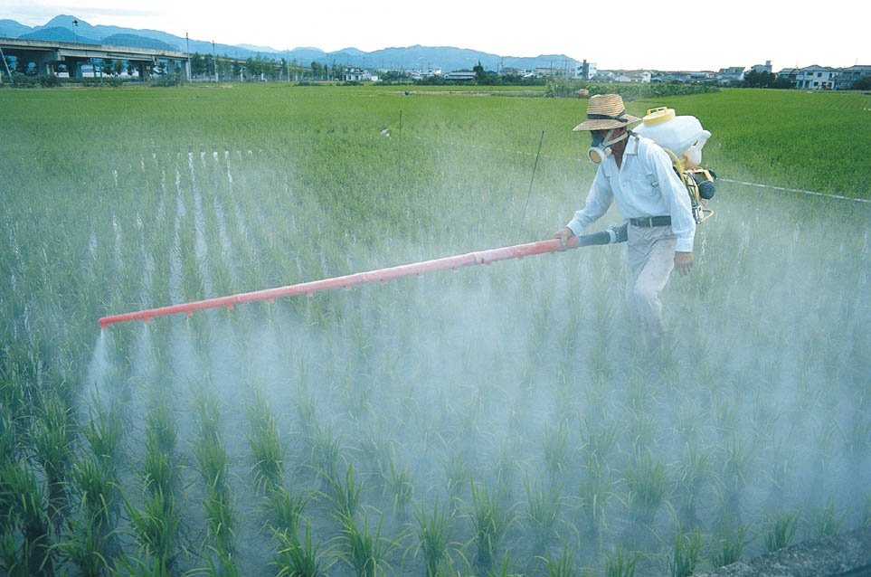

Pesticides are chemical substances that are used to control insects, water weeds, and even plant diseases. Naturally-occuring pesticides, such as faeces, have been in use for centuries. However, the widespread production and use of modern pesticides did not begin until the 1940s.
Pesticides are a big business nowadays. In the United States, over a billion pounds of pesticides are used annually, which cost a value of 8 billion dollars.

The reason why pesticides are pretty common nowadays is that they are beneficial chemicals, which means that they are useful in many ways. First, they can protect against farm crop losses and can aid in more efficient food production. Most of the food we eat today contain man-made pesticides. Pesticides are also used to decrease the starvation of humans and animals.
Another reason is that pesticides are relatively easy to apply, cost-effective, and the only known practical method to control crops. Pesticides must always be used with great care so that the health of living things are protected. Some disadvantages of pesticides are: 1) pesticides are toxic and can be harmful to living things and 2) it is an un-natural way to grow crops.